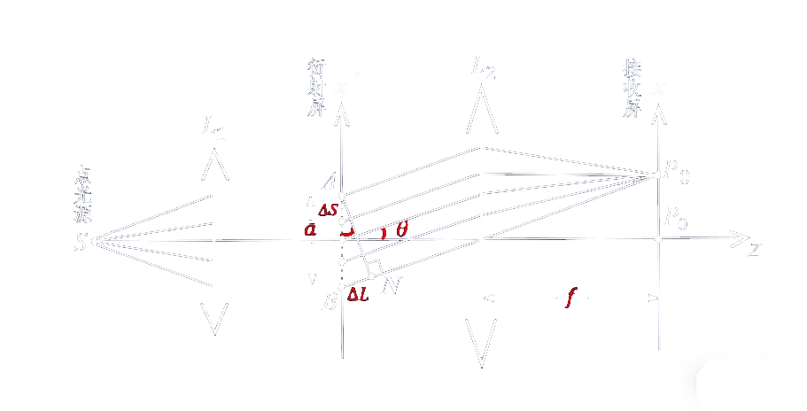
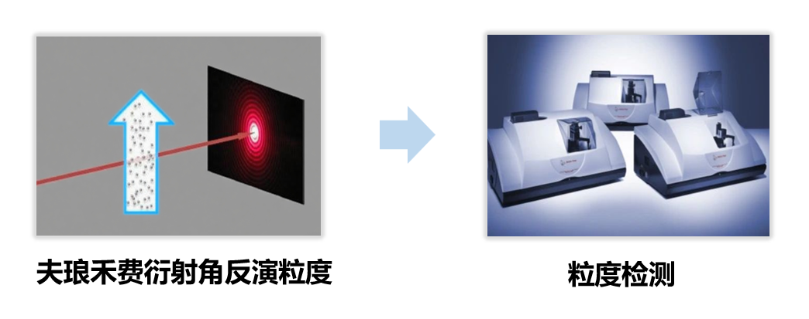

夫琅禾费单缝衍射实验
实验背景
夫琅禾费单缝衍射是约瑟夫·冯·夫琅禾费于19世纪初确立的经典远场衍射模型，是远场衍射的核心模型。该实验以平行光入射单缝，在远场（或借助透镜）条件下观测衍射图样，是验证光的波动性的关键实验之一。
夫琅禾费单缝衍射是指入射光和衍射光均为平行光的衍射现象。在实验中，它可借助两个透镜实现，位于第一个透镜物方焦面上的点源经透镜后成为平行光，垂直照射在衍射屏上；屏上单缝处的波前向各方向发出子波（衍射光），沿同一衍射角传播的子波经第二透镜会聚于其像方焦面的同一点，形成衍射图样。
本实验明确了“远场条件”是简化光程差计算的前提，确保入射光可视为平行光、衍射光经透镜会聚后等效于无穷远接收；“单缝子波的相干叠加”是衍射图样的物理本质，可借助半波带法分析：当缝被划分为偶数个半波带时形成暗纹，划分为奇数个半波带时出现明纹（中央明纹除外，其强度远大于次级明纹）。
实验原理

实验原理
1. 子波的相干干涉
从置于透镜$L_1$物方焦面的点光源$S$发出的光，经$L_1$后成为平行光，垂直射向单缝衍射屏。根据惠更斯-菲涅耳原理，单缝所在平面可视为一个波前，波前上的每一点都是发射球面子波的次波源。这些次波源于同一入射光，因此频率相同、振动方向一致，且在正入射条件下单缝平面处各点相位相同。当次波传播至远场（或经透镜$L_2$会聚于其像方焦面上的接收屏）时，各次波在空间某点相遇，满足相干叠加条件，其振动的合效果便形成了明暗相间的衍射图样。
2. 单缝两边缘的光程差
设光轴为$z$轴，单缝宽度沿$x'$（即$x$）方向，缝长沿$y'$（即$y$）方向（缝长无限长，衍射主要在$x - z$平面内分析）。单缝宽度为$a$，衍射角$\theta$为衍射光线与光轴（即入射光方向）的夹角。对于接收屏上某点对应的衍射方向，由单缝上、下边缘发出的次波传播至该点的最大光程差为：$\Delta L = a\sin\theta$。
3. 干涉光强公式推导
采用振幅矢量叠加法：将单缝划分为$N$个等宽子波源，每个子波在观察点产生的振幅矢量等长。从A点作一系列等长的小矢量首尾相接，逐个转过相同的小角度，最终到达B点，总共转过的角度为$\delta = \frac{2\pi}{\lambda}\Delta L = \frac{2\pi a}{\lambda}\sin\theta$。当$N \to \infty$时，各矢量构成一段圆弧。设圆弧的圆心在$C$点、半径为$R$、圆心角为$2\alpha = \delta$，则合振幅$A_{\text{θ}}$等于弦长$\overline{AB}$，从图中可得$A_{\text{θ}} = 2R\sin\alpha$。圆弧长度对应所有子波振幅之和，在傍轴条件下等于衍射中心$P_{0}$处的振幅$A_{0}$，即$\overset{\frown}{\rule{0pt}{1em}AB}= A_{0} = 2R\alpha$。解得$R = \frac{A_{0}}{2\alpha}$，代入弦长公式得$A_{\text{θ}} = A_{0}\frac{\sin\alpha}{\alpha}$，其中$\alpha = \frac{\delta}{2} = \frac{\pi a}{\lambda}\sin\theta$。光强与振幅平方成正比，故夫琅禾费单缝衍射的强度分布为$I_{\text{θ}} = I_{0}\left( \frac{\sin\alpha}{\alpha} \right)^{2}$，其中$I_{0}$为衍射中心点$P_{0}$的光强。该公式称为单缝衍射因子，决定了衍射图样的明暗分布。
4. 条纹规律

- 由光强公式$I(θ) = I_{0}\left( \frac{\sin\alpha}{\alpha} \right)^{2}$（其中$\alpha = \frac{\pi a\sin\theta}{\lambda}$），可得中央主极大（零级衍射斑）位于$\alpha = 0$，即$\theta = 0$处，光强最大$I = I_{0}$，绝大部分光能集中于此。
- 暗纹位置对应光强为零，即要求$\sin\alpha = 0$而$\alpha \neq 0$，即$\alpha = \pm k\pi$ , $(k = 1,2,\ldots )$，代入$\alpha$定义式即得$a\sin\theta_{\text{k}} = \pm k\lambda$。
- 次极大（高级衍射斑）位置由光强极值条件给出，满足超越方程$\tan\alpha = \alpha$ , $(\alpha \neq 0)$。其数值解近似为$a\sin\theta_{\text{k}} \approx \pm \left( k + \frac{1}{2} \right)\lambda$,其中 $(k = 1,2,\ldots)$。
- 相邻条纹间距：在傍轴近似（$\theta$很小）下，由暗纹条件$a\sin\theta_{\text{k}} = \pm k\lambda$可得$\sin\theta_{\text{k}} \approx \theta_{\text{k}} \approx \pm \frac{k\lambda}{a}$，故相邻暗纹的角间距为$\Delta\theta = \theta_{\text{k}+1} - \theta_{\text{k}} \approx \frac{\lambda}{a}$。若接收屏位于透镜$L_{2}$的焦平面（焦距$f$），则屏上相邻暗纹间距为$\Delta x = f\Delta\theta \approx \frac{f\lambda}{a}$，中央亮纹宽度为相邻一级暗纹间距的两倍：$\Delta x_{0} = 2\Delta x = \frac{2f\lambda}{a}$。
5. 实验现象
- 改变波长$\lambda$：给定缝宽$a$和焦距$f$，$\lambda$增大→$\Delta x$增大，条纹变宽。
- 改变缝宽$a$：给定波长$\lambda$和焦距$f$，$a$变大→$\Delta x$减小，条纹变窄。
- 改变透镜$L_2$的焦距$f$：给定波长$\lambda$和缝宽$a$，$f$增大→$\Delta x$增大，条纹变宽。
- 改用复合光光源：中央为白色亮纹，两侧出现彩色条纹（短波紫光条纹间距小，长波红光条纹间距大），这是由于暗纹条件$a\sin\theta_{\text{k}} = k\lambda$中，波长$\lambda$越大，衍射角$\theta$越大。
注：中央亮纹宽度为相邻一级暗纹间距的两倍，即$\Delta x_{0} = \frac{2f\lambda}{a}$。
原理应用
基于衍射条纹间距与缝宽、波长的定量关系，单缝衍射可用于：微小尺寸测量（如细丝直径、狭缝宽度）、光学系统像质评价、颗粒粒度分析等。

学习要点： 掌握夫琅禾费单缝衍射光强公式$I(\theta) = I_{0}\left( \frac{\sin\alpha}{\alpha} \right)^{2}$，$\alpha = \frac{\pi a\sin\theta}{\lambda}$是该部分内容的核心。通过该公式可统一解释中央主极大、暗纹与次极大位置、条纹宽度及影响因素，它也是后续衍射应用的理论基础。
操作方法
操作方法
调节波长：滑动滑块，或在数值输入框输入波长数值。
调节单缝宽度：滑动滑块或直接输入缝宽数值（范围：0.5--100.0$\mu m$）。
调节透镜$L_2$的焦距$f$：滑动滑块或直接输入焦距数值。
拓展操作（单色光/复色光切换）：点击或切换光源类型。复色光模式下，可通过“波长成分控制”按钮调节红光与蓝光的相对强度或选择参与叠加的波长成分（如纯红光、纯蓝光或红蓝混合光）。
操作提示： 按照步骤逐一操作，利用控制变量法，分别观察参数变化对衍射图样的影响，加深对公式$\Delta x = \frac{f\lambda}{a}$的理解。建议先从单色光模式开始，掌握基本原理后再尝试复合光实验。
实验仿真
参数控制面板
实验演示视频
光强分布图
衍射条纹显示
当前参数
波长: 600 nm | 单缝宽度: 0.0314 mm | 透镜焦距: 200 mm